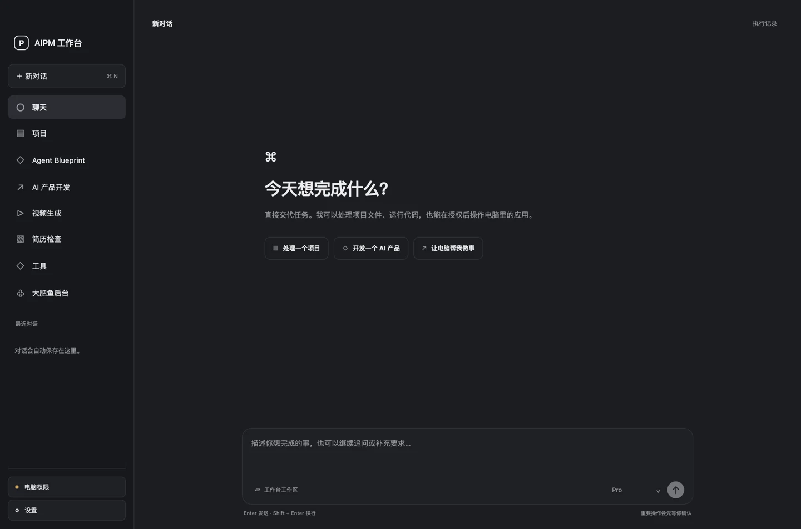

01~/workspace/关于我
HELLO, WORLD.
你好，我是
张俊豪.
把好奇心，
做成可以使用的作品。
我围绕 AI 产品与 Agent 工作流做设计和开发，也做像素游戏、交互网页和日常工具。这里放着近期持续打磨的项目，欢迎打开体验。
CREATION WORKSPACEIDEA → INTERFACE → EXPERIENCE
INPUT日常里的小问题界面与交互灵感
好奇心
变成作品
EXPLORE · MAKE · REFINE 从真实需求出发每一个入口，都有实际作品
01 /
浏览作品 ↗最近在认真打磨的作品
~/workspace/作品集
SELECTED CREATIONS
从一个想法，
到可以体验的作品.
项目以当前仓库记录为准。CinePilot 为本地 Demo；Mosslume 为开发中的可玩原型，最新实机与公开源码快照可能不同步。第三方来源见各仓库说明。
~/workspace/工具与 Skill
TOOLS & REUSABLE SKILLS
从日常问题，
做出顺手的工具.
从跨店点餐的 MCP 实践，到界面材质、划词翻译与 AI 阅读。
MCP 网页演示使用公开历史记录；实时核价需连接相应服务。Glass UI 演示呈现网页内部的材质效果，各工具运行条件见项目说明。
~/workspace/记录与分享
NOTES & UPDATES
作品之外，
也留下一些记录.
02 /
PRODUCT & EVIDENCE项目里的公开记录
从产品方案、工作流到实际验证，沿着项目文档继续了解。
AIPM Workbench
产品设计、Agent 架构与任务验证
CinePilot
创作工作流、局部改稿与视频导出
MioBot
个人助手、人设、记忆与一次性提醒
Mosslume
AI 伙伴、营地协作与像素世界
百妖牌馆 · 十三张
摆牌、道具与完整闯关流程
更多作品的说明，从作品集打开。
KEEP A TRACE.~/workspace/找到我
LET'S CONNECT
关于作品，
或者下一个好奇心.
可以在 GitHub 看代码和项目进展，也可以在小红书找到我。
✦
感谢你来逛逛。
下次，也许又有新作品。